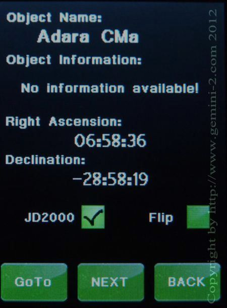

| Interactive Hand-Controller Menus - click on green button to Navigate |
|  | This is an example of one of the stars that will come up.
If you had noticed, I did not enter a selection letter in the top menu of
the previous screen. Here you can select to use JD2000 coordinates system or JNOW coordinates system. JD2000 is default. If you what the mount to try and do a meridian flip to get to the star put a check next to Flip option. Note that the mount will only do a flip if it can safely reach the star on the other side, otherwise it will ignore it. Hitting the GoTo button will take you to the star. Hitting the NEXT button will pick the next star/object. Now that you see how the catalog tour works, please hit Back. This will take you to the main GoTo menu. |